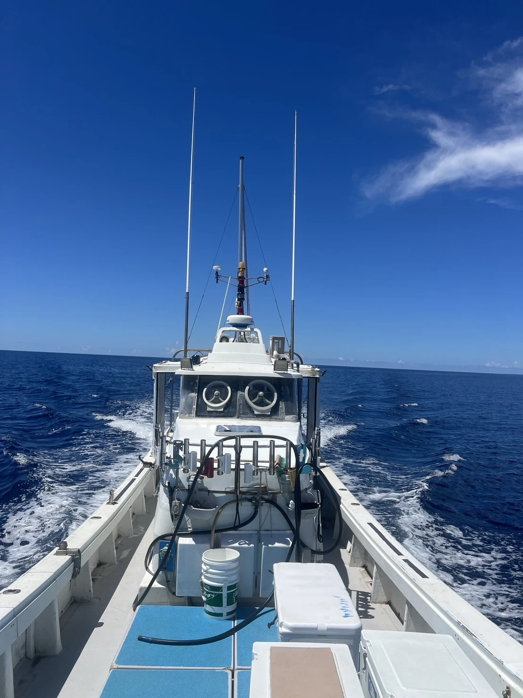
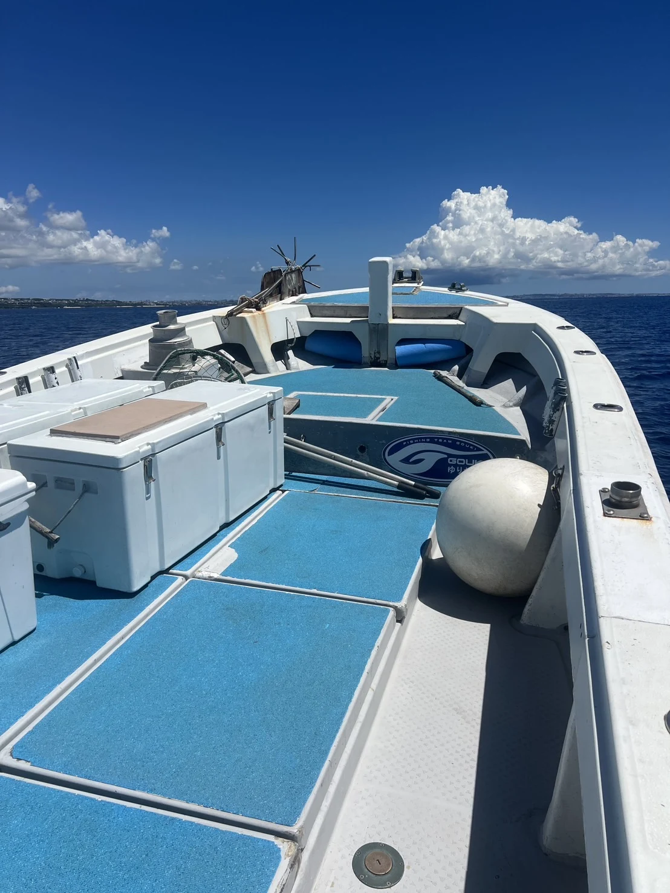
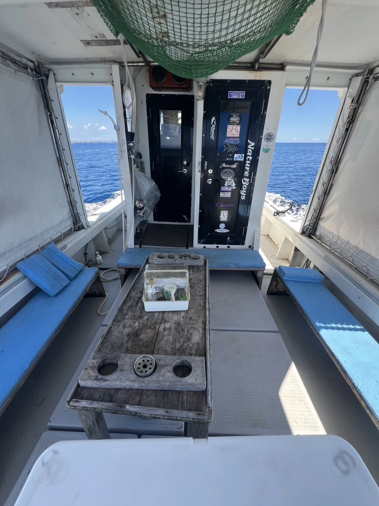
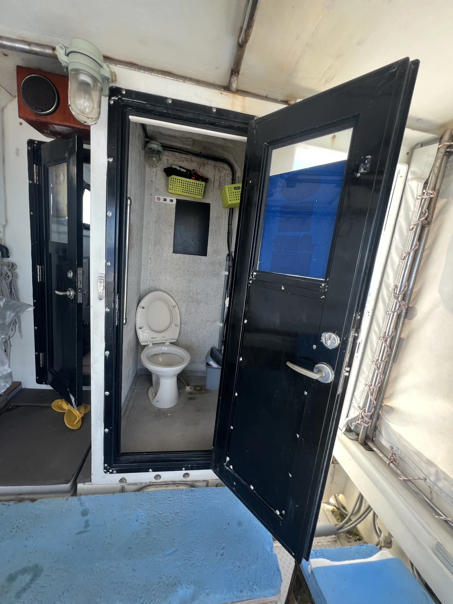
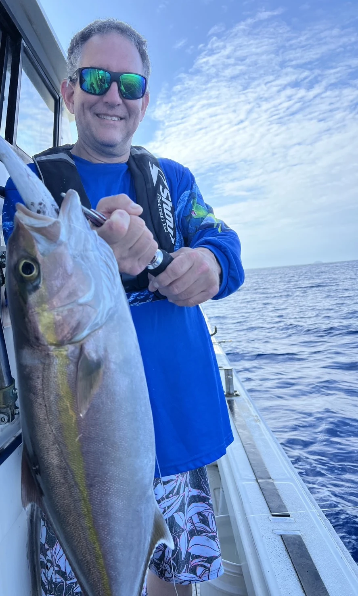
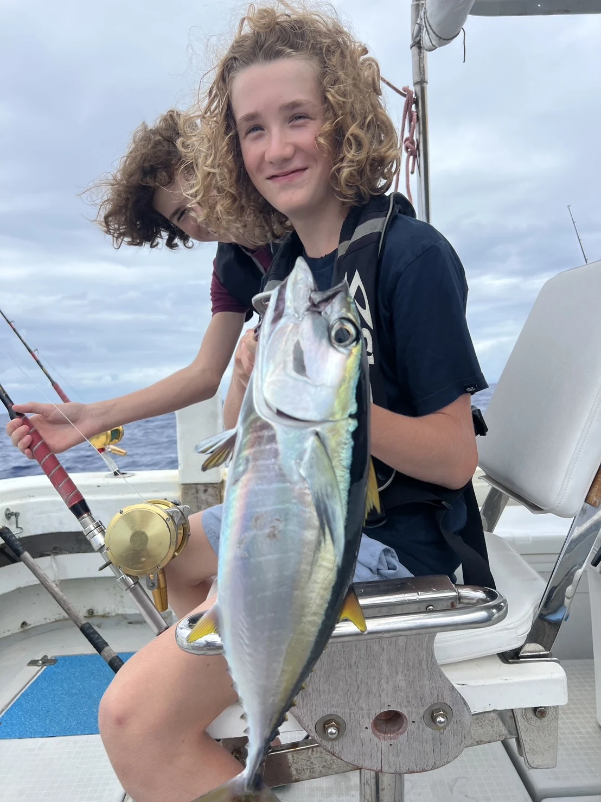
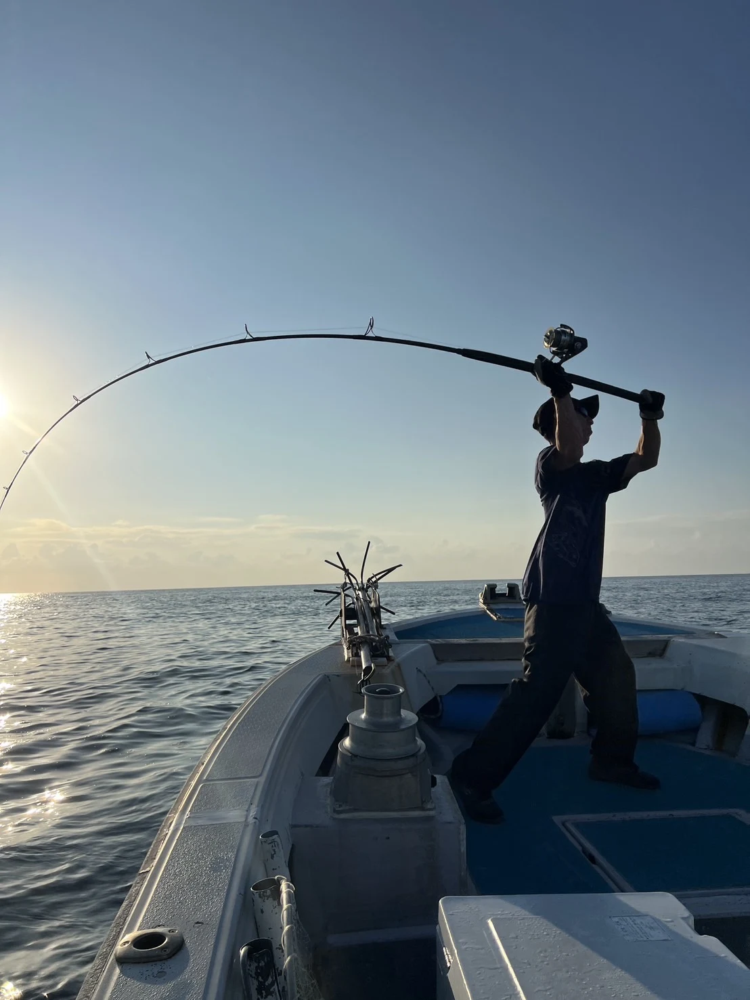

Your boat.
Your captain.
Your day at sea.
Take a closer look at the boat before your fishing trip — real photos, a welcoming captain, and the essentials for a day on the water.
Step aboard ↓
Room for your day on the water.
Our 12-metre fishing boat has an open deck, a covered seating area and an onboard toilet. Explore the photos below — tap any photo for a closer look.



Meet your captain.
Your Japanese captain has around 30 years of experience, speaks good English, and regularly welcomes international guests.
New to fishing? Beginners are very welcome!
Moments from real trips.
A few glimpses of fishing days with our guests. Every trip is different; catches depend on the conditions.



All photos on this page were taken in 2026.
See you on the water.
Departing from the Chatan area, Okinawa.
Detailed meeting instructions are provided after your booking is confirmed.
+81 70-8952-3968 · Okinawa Private Tour
A note about our guests’ photos
Our guests have kindly given us permission to share their photos with you on this page.
For viewing only. Please respect their privacy: do not download, copy, repost, redistribute, or forward these photos to others. Permission to view does not include permission to share them elsewhere.
Thank you for helping us protect our guests’ privacy.